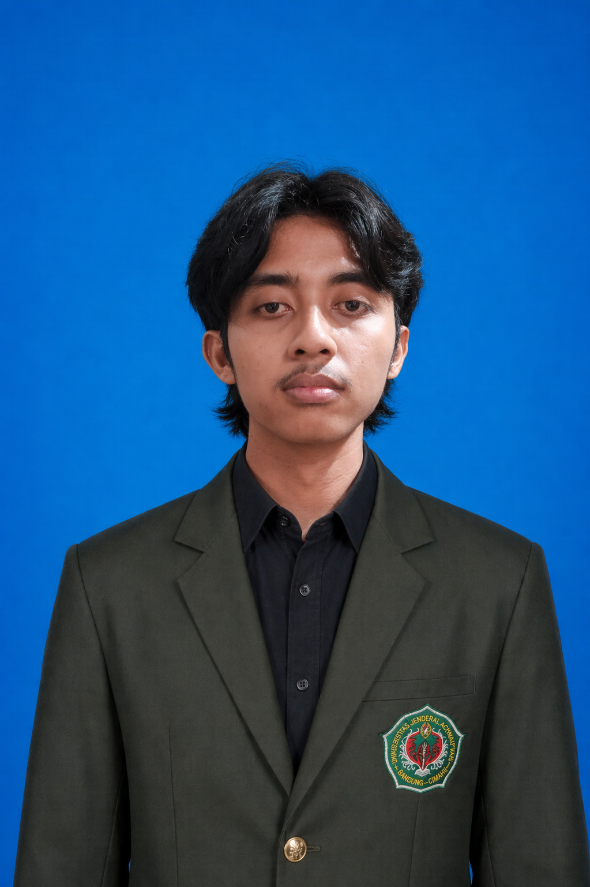

Portal referensi teknik sipil, engineering resources, dan dokumen pendukung perencanaan struktur untuk mahasiswa dan engineer Indonesia.
Referensi teknik sipil dan standar yang paling sering digunakan.
Baja tulangan beton.
Persyaratan beton struktural untuk bangunan gedung.
Beban desain minimum dan kriteria terkait.
Tata cara perencanaan ketahanan gempa.
Peta sumber dan bahaya gempa Indonesia tahun 2024.

Founder of AT Structura. Mahasiswa Teknik Sipil yang berfokus pada structural engineering, engineering resources, dan pengembangan technical tools untuk mahasiswa dan engineer Indonesia.